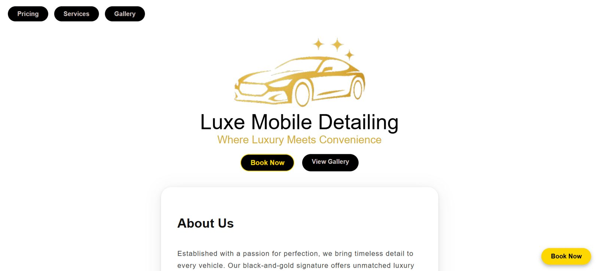
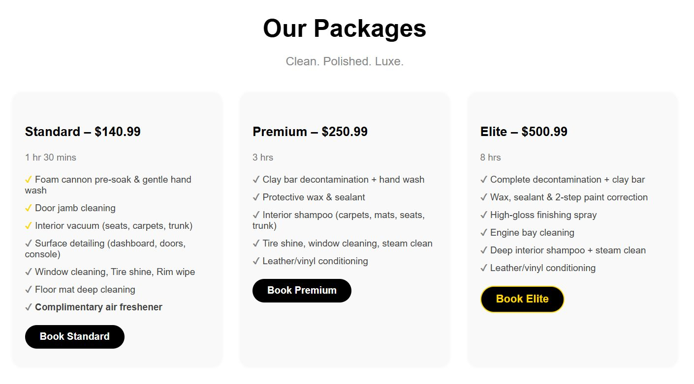
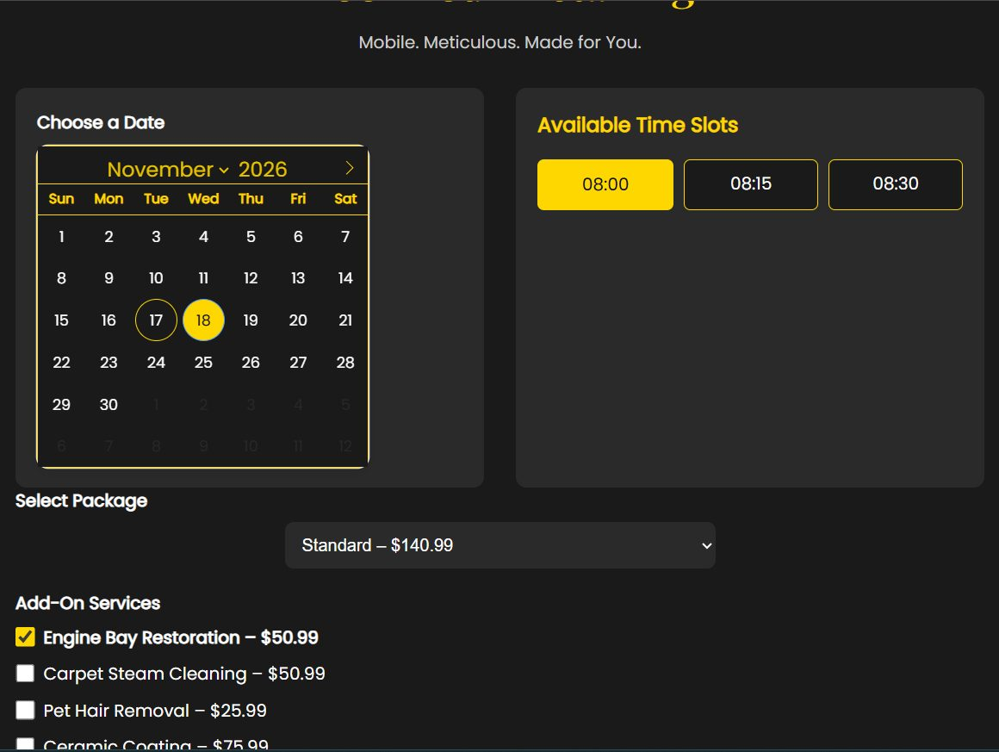
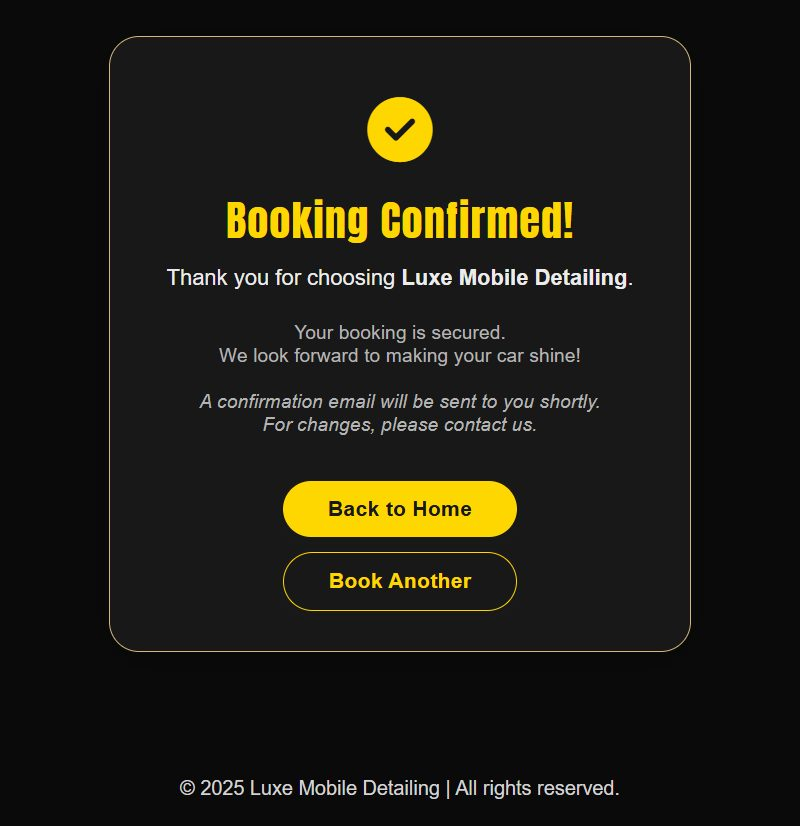
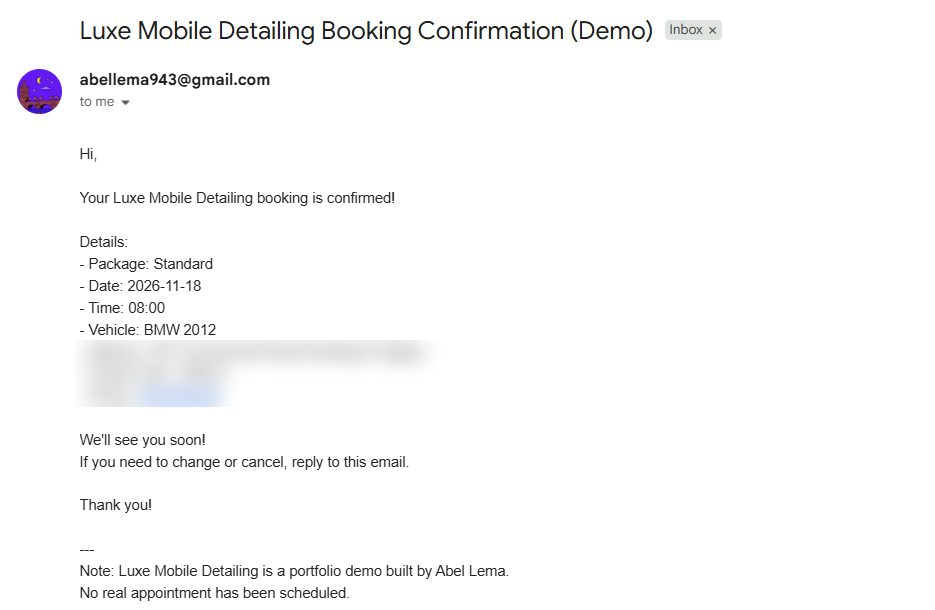

PROJECT STORY · CLIENT WORK
Luxe Mobile Detailing
A booking website I built for a real Calgary business, so customers could book in a couple of minutes and the owner never double-booked a slot again.
- Python
- Flask
- JavaScript
- HTML/CSS
- Google Calendar API
- Gmail SMTP
- Render

01 · HOW IT STARTED
My first real client
An old friend of mine was starting a mobile car detailing company. He'd heard I was studying computer science and asked if I could build his website. He sent me a barbershop's website as inspiration, and from there it was up to me.
That made it different from anything I'd built for school. There was a real business, a real owner, real customers, and a deadline that wasn't mine to move.
02 · THE PROBLEM
Too many ways to book
Before the website, customers booked through whatever was easiest for them: a phone call, a text, word of mouth, or an Instagram message. With bookings coming in from several places, keeping track of the schedule was hard.
The fix wasn't just "make a website." It was making one place every booking has to go through, so a slot that's taken looks taken to everyone.
03 · HOW IT WORKS
One booking, start to finish
Here's what happens when a customer books, and what the site does behind the scenes at each step.
1. Pick a package
Each package takes a different amount of time: Standard is 1.5 hours, Premium is 3 hours, and Elite is a full 8 hours. That matters, because the site uses the package length to decide which times are actually free.

2. Pick a date, see only the open times
When a date is picked, the site reads the owner's Google Calendar and works out which times are really open:
- Business hours are 8 AM to 3 PM, checked in 15-minute steps.
- Every existing booking blocks its time plus a 35-minute travel buffer, because it's a mobile business and the owner has to drive to the next car.
- A slot only shows up if the whole job fits before closing without overlapping anything.
So the customer can't pick a time that's already taken. That's the double-booking problem, solved.

3. Book it: confirmed, emailed and on the calendar
When the customer submits, three things happen at once:
- The booking is written straight into the owner's Google Calendar, with the vehicle, address, phone number and add-ons in the event.
- The customer gets a confirmation email with all their booking details.
- The customer sees a confirmation page.
The owner doesn't have to copy anything from a DM into a calendar anymore.


04 · THE HARD PART
Two kinds of hard
Hardest to build: connecting everything
Getting the site to talk to Google Calendar, and then tying that to the confirmation emails, was the most technically difficult part. The site has to read the calendar to show open times, write to it when someone books, and send an email, all in one smooth flow for the customer.
Hardest to see coming: real users
I hadn't planned for people typing strange addresses or wrong information. So I added checks on the server: a real email format, a Calgary phone number (403, 587, 825 or 368), a Calgary postal code (T2 or T3), and an address in Calgary, since the business only served the city.
How a time slot gets checked, from my code (simplified)
cur = open_time # 8:00 AM
while cur + package_length <= close_time: # 3:00 PM
slot_start, slot_end = cur, cur + package_length
# every existing booking blocks its time + a 35-minute travel buffer
taken = any(slot_start < busy_end + buffer and slot_end > busy_start
for busy_start, busy_end in calendar_events)
if not taken:
open_slots.append(slot_start)
cur += 15 minutes05 · WORKING WITH A REAL CLIENT
The business comes before the code
The biggest lesson from this project wasn't technical. The company's needs come before the technical side. The owner had a strict deadline for when the site needed to be done, so I had to cut some of the things I wanted to add as a developer.
That was hard to accept at first. As a developer, a project never feels finished, because you can always see the next thing to build. But a site that works and launches on time is worth more to a business than a perfect one that's late.
After launch, the site took real bookings, and I kept fixing issues and updating features as the business's needs changed.
06 · WHERE IT IS TODAY
Rebuilt as a public demo
The business has since stopped operating, so I turned the site into a demo that runs on my own accounts. Making a real booking site safe to leave open to the public meant a few changes:
- The calendar and email connections only switch on when their settings exist. Without them, the site simulates a realistic, partly-booked day, so it runs anywhere.
- Each visitor can make at most 3 bookings an hour, so nobody can spam it.
- Every confirmation email is clearly marked as a demo.
07 · WHAT I'D DO DIFFERENTLY
Plan first, then build
Next time I'd start with a plan before writing any code, and talk with the owner about what the business actually needs. Knowing that up front makes it much easier to decide what to cut when the deadline gets close.
08 · WHAT I'D IMPROVE
Real address lookup
Right now the address check only makes sure the customer typed something reasonable that includes Calgary. I'd replace that with a real address search, so the site finds the customer's actual address and confirms it before they book.
Try booking a detail
Pick a package and a date and watch the open times change. It's a demo, so no real appointment gets made.